Zur does not tutor to hand — he puts an enchantment of mana value three or less straight onto the BATTLEFIELD, for free, every time he attacks. So the deck is a toolbox with a three-mana ceiling, and most of the skill is knowing what to fetch on each attack. He also flies, which means the wall he fetches stops everyone else and not him. The commander 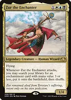Zur the Enchanter1/4 flier, and every attack finds an enchantment with mana value three or less and puts it into play. He is a tutor, a threat and a value engine on one card. 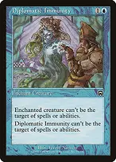Diplomatic Immunityshroud on Zur — and here is the trick that makes the deck work: his ability PUTS the aura onto the battlefield rather than targeting it, so you can keep suiting him up while he is completely untargetable. Fetch this first against any table with removal. Greater Auramancyshroud for your other enchantments AND for your enchanted creatures. Between this and Diplomatic Immunity, Zur becomes almost impossible to answer without a wrath. Lightning Greaveshaste so he attacks the turn he lands, and shroud as a backup. 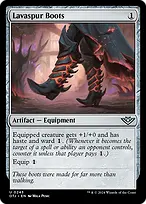Lavaspur Bootsone mana for haste and ward, and it lets you still target him yourself. Flawless Maneuverfree with a commander out, and it beats the wrath that is your only real out. What to fetch, in rough order Mana value four or more is NOT fetchable. Moat, Archon of Sun's Grace and Approach of the Second Sun all have to be cast the hard way — a common misplay is attacking expecting Moat. Diplomatic Immunityprotection first, always, if the table can kill Zur. 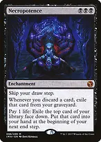Necropotencethree mana, and it turns your life total into as many cards as you want. Zur finding this on turn five effectively ends the card-advantage game. Mystic Remoraon an early attack, it draws more than anything else in the deck. 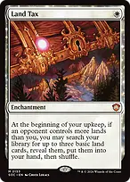Land Taxthis deck is not land-hungry, but three basics a turn is fuel and deck-thinning for free. Ghostly Prisonnobody attacks you profitably, which matters because Zur has to keep attacking. 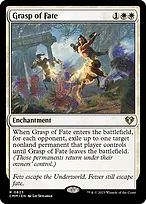Grasp of Fateexiles a nonland permanent from EVERY opponent, on one fetch. 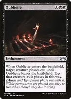Oubliettethe cleanest answer to a commander — it phases out, so no death trigger, no exile trigger, nothing. 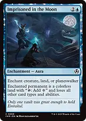Imprisoned in the Moonturns a commander, land or planeswalker into a colourless land it cannot recast. 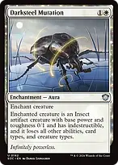Darksteel Mutationtwo mana, turns a commander into a 0/1 Insect. Blind Obediencetheir creatures and artifacts arrive tapped, and extort drains on every spell. Aura of Silencetaxes their artifacts and enchantments, and sacrifices to destroy one. 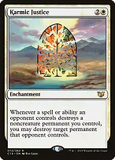Karmic Justicethey cannot answer your enchantments without losing a permanent of their own. Luminarch Ascensionwith Ghostly Prison out you rarely lose life, so it turns on quickly and makes a 4/4 flier every turn. The Voltron kill 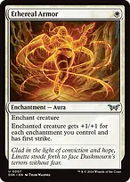Ethereal Armor+1/+1 for every enchantment you control, plus first strike. In this deck it is routinely +6/+6 or more, and it is fetchable. 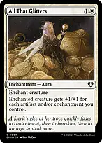All That Glittersthe same count, including artifacts. 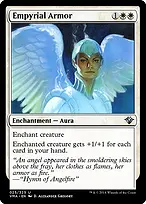Empyrial ArmorZur can fetch this three-mana Aura directly onto himself before blockers, even through shroud. It adds +1/+1 for every card in your hand, turning Necropotence, Rhystic Study and Mystic Remora into commander damage. 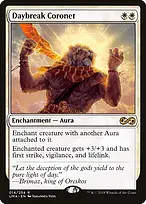Daybreak Coronet+3/+3, first strike, vigilance and lifelink for two mana — but it needs another Aura already attached, so it is the second thing you fetch, never the first. Necropotence puts the purchased cards into your hand at your next end step, so paying life during combat does not immediately grow Empyrial Armor. Build the hand on the previous turn; Reliquary Tower lets you retain more than seven cards. With seven cards in hand, Empyrial Armor alone makes Zur an 8/11. Recount before damage if you cast spells or discard cards. Zur flies over Moat. Count his actual power and each opponent's accumulated commander damage before committing to a lethal attack; twenty-one combat damage from Zur eliminates that opponent. Making the enchantments count twice 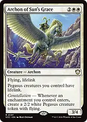Archon of Sun's Gracea 2/2 flying lifelinking Pegasus for every enchantment that enters — which with Zur is one a turn, minimum. 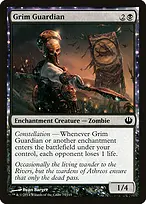Grim Guardianeach opponent loses a life for every enchantment that enters. 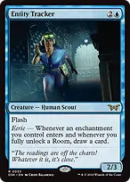Entity Trackerflash, and a card for every enchantment that enters. 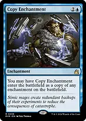Copy Enchantmenta second Necropotence, Moat, Ghostly Prison or Greater Auramancy. 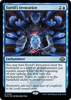Estrid's Invocationthe same, and it can re-enter each upkeep to reset a constellation trigger. 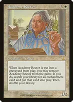Academy Rectorwhen it dies, you may exile it to fetch any enchantment onto the battlefield, with no mana value limit. This can find Moat; it cannot find Approach of the Second Sun, which is a sorcery. Tutors and cards Idyllic Tutorany enchantment to hand, including the expensive ones Zur cannot reach. 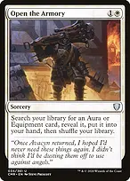Open the Armoryan Aura or Equipment. 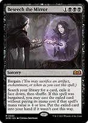Beseech the Mirrorbargain it and cast the tutored card free if it costs four or less. Necropotenceas many cards as your life total allows. Esper Sentineltaxes their first noncreature spell each turn. Land Taxfree basics and a thinner deck. Interaction Mana Draincounter their answer, and the mana casts the next enchantment. Force of Negationfree on their turn. Dovin's Vetouncounterable. 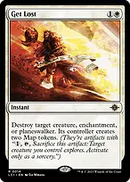Get Lostcreature, enchantment or planeswalker at instant speed. Cyclonic Riftoverloaded, the clear for a lethal Zur attack. Out of Timephases out every creature present, including Zur, until it leaves. Use it to reset a dangerous board before casting Zur, or accept losing your existing Zur for its duration; fetching it mid-attack removes him from combat too. Grand Abolishernobody responds during your turn. Moatcast it, do not fetch it. Creatures without flying cannot attack at all, and Zur flies. How you actually win Zur the Enchantertwenty-one commander damage in the air, behind a wall nobody can attack through. Approach of the Second Sunthe backup, and Academy Rector is not how you get it — it must be CAST from hand, twice. Luminarch Ascensiona 4/4 flier every turn once it is online. Archon of Sun's Gracea Pegasus per enchantment, and they all have lifelink. What to keep in an opening hand Keep four lands and a rock, or three lands and Land Tax. Zur costs four and the deck does very little before he lands, so the priority is casting him on curve with a spare mana for protection. Attack even when the board is bad. The fetch happens on the attack trigger, before blockers, so an attack that gets chump-blocked still gives you a free enchantment. The only reason not to attack is a removal spell you cannot answer. Fetch protection before value against an open table. A Zur that lives to attack four more times is worth more than any single Necropotence. Daybreak Coronetremember it needs another Aura attached first. Fetch Ethereal Armor or Diplomatic Immunity on the earlier attack so the Coronet is legal on the later one. Empyrial Armorfetch it when your existing hand makes the attack threatening. A Necropotence fetched on this attack fills your hand at the end step, setting up Armor on a later attack.